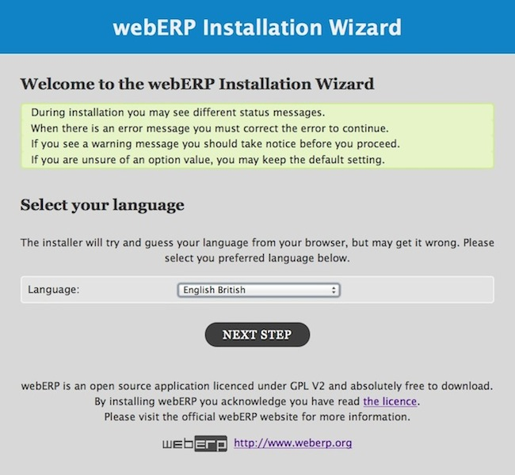
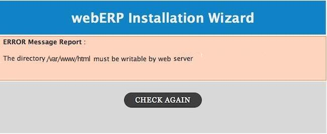
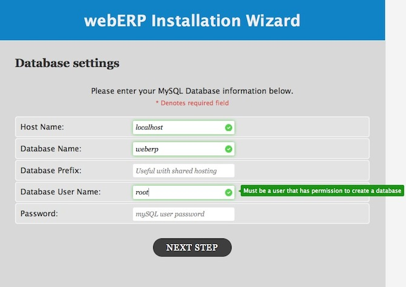
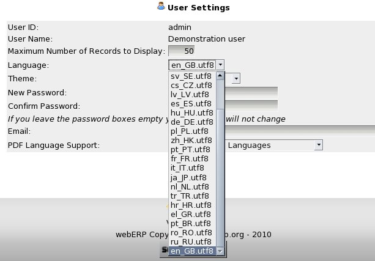

Manual webERP Installation
A manual installation consists of the following five steps:
- Copying all the PHP scripts and include files to a directory under the web server document root directory - as for the automatic installer option above
- Creating the database and populating it with initial data
- Editing config.php for the database connection information and any other requirements
- Logging into the system for the first time
- Setting system parameters
- Setting up company specific information in the system
Copying the PHP Scripts
All files in the archive except the installation instructions in INSTALL.txt, weberp-demo.sql and weberp-new.sql should be copied to a directory under the web server DocumentRoot directory. This varies by distribution but:
/srv/www/htdocs
is the default Apache DocumentRoot directory under SuSE.
Copy the archive to this directory and then extract the archive. The webERP directory will be created here (/srv/www/htdocs/webERP) and all scripts and other directories will be copied to that directory.
Creating the Database
webERP works only with MySQL or MariaDB database servers.
You need to know the user name and password for the MySQL server. If you have not set these up the default is
user root
password ""
BUT ... you should NOT use this account. You should set up another user for your MySQL installation and change the root password to something other than "".
All instructions for using MySQL refer to the command line client that comes with MySQL. To run this under Windows a DOS box must be opened. From XP or 2000 click Start, Run, enter "cmd" and click Run. The mysql.exe binary is located by default under C:\mysql\bin\mysql.exe. This would be the command line statement required to run the mysql client. The options discussed below should be appended as required.
From the MySQL manual (edited):
The MySQL root user is created as a superuser who can do anything. Connections must be made from the local host. NOTE: The initial root password is empty, so anyone can connect as root without a password and would have all privileges. Because your installation is initially wide open, one of the first things you should do is specify a password for the MySQL root user. You can do this as follows (note that you specify the password using the PASSWORD() function):
You can, in MySQL Version 3.22 and above, use the SET PASSWORD statement:
shell> mysql -u root mysql
mysql> SET PASSWORD FOR root=PASSWORD('new_password');"
where 'new_password' is the new password you chose for the root user.
Also from the MySQL manual (edited):
Also, if you have changed the root user password, you must specify it for the mysql commands below. You can add new users by issuing GRANT statements:
shell> mysql --user=root -p 'new_password' mysql
mysql> GRANT ALL PRIVILEGES ON *.* TO weberp@localhost IDENTIFIED BY 'some_pass' WITH GRANT OPTION;"
Where 'some_pass' is a password of your choice for the new user 'weberp'. Note that this user 'weberp' can only connect from the local machine so if the web server is on a different machine then the MySQL server you need to give privileges to connect from other computers. See the MySQL manual.
Innodb tables must be enabled in the MySQL server. These tables allow database transactions which are a critical component of ERP software. Innodb tables require some parameters to be set up in my.cnf. There are some examples in the MySQL manual under table types - Innodb tables.
If you have an account set up already in MySQL and Innodb tables enabled, then all you need to do is to run one of the sql scripts.
Two scripts are provided under the webERP/sql/mysql directory (folder):
- weberp-demo.sql This has a minimal amount of demonstration data with a bogus company set up so that transactions can be tried to see how the system works.
- weberp-new.sql This script has only the basic data necessary to start a new company. If you wish to set up your company using the webERP software, then this is the script to use. This creates a webERP database and populates it with only the very basic starting data.
The files weberp-demo.sql and web-erp-new.sql should be in the directory with all the PHP scripts. Change to the directory where the scripts are held or use the full path and enter:
shell > mysql --user=weberp --password='some_pass' < path_to_web_server/webERP/sql/mysql/weberp-demo.sql
or
shell > mysql --user=weberp --password='some_pass' < path_to_web_server/webERP/sql/mysql/weberp-new.sql
as required. Modify the user entered here as 'weberp' to the user you created in MySQL for the purpose, and modify the password stated here as 'some_pass' to the password appropriate for the user. Also modify the path_to_the_sql_script to the appropriate path - perhaps something like /srv/www/htdocs/webERP/.
Editing config.php
config.php contains a series of user defined variables that determine how the system behaves. Critically it contains the host (computer name), username and password of the database connection required to connect to the database server. There is also an option to chose which type of database server is to be used. Currently there are only options for mysql and mysqli. There is no going forward without this data.
The default contents of the config.php file are as follows and must be edited in an editor of choice. Then, save config.php in the web directory where the scripts are located. Note, the system is continually evolving and may well have changed since this was written.
The time-zone of the business should also be specified here using a statement like:
putenv('Australia/Sydney');
This ensures that the time-zone of the business is displayed on all browsers using the system irrespective of where the web-server is located (i.e. the timezone of the web-server)
The CompanyList array is defined at the end of the config.php file and usually added by the installer, or a webERP utility script (Z_MakeNewCompany.php) that will create a new additional company and database setup for webERP. The CompanyList array contains a list of databases used with their associated Company Name. One of the functions is to allow Login to show the Companies available and obfuscate the database name for security reasons. This CompanyList array should be added as in the example below.
// User configurable variables
//---------------------------------------------------
//DefaultLanguage to use for the login screen and the setup of new users
//The users' language selection will overrid
$DefaultLanguage ='en_GB.utf8';
// Whether to display the demo login and password or not on the login screen
$AllowDemoMode = false;
// email address of the system administrator
$SysAdminEmail = 'admin@mydomain.com';
// webERP version
$Version = '3.04';
// The timezone of the business - this allows the possibility of having
// the web-server on a overseas machine but record local time
// this is not necessary if you have your own server locally
// putenv('TZ=Europe/London');
// putenv('Australia/Melbourne');
// putenv('Australia/Sydney');
// putenv('TZ=Pacific/Auckland');
// Connection information for the database
// $host is the computer ip address or name where the database is located
// assuming that the web server is also the sql server
$host = 'localhost';
$mysqlport=3306;
//The type of db server being used - currently only mysqli or mysql
//$DBType = 'mysql';
//$DBType = 'mysqli';
// sql user & password
$DBUser = 'weberp_db_user';
$DBPassword = 'weberp_db_pwd';
//It would probably be inappropriate to allow selection of the company in a hosted environment so this option can be turned off with this parameter
$AllowCompanySelectionBox = true;
//If $AllowCompanySelectionBox = false above then the $DefaultCompany string is entered in the login screen as a default
//otherwise the user is expected to know the name of the company to log into and a selection is required from the company selection box.
//The selection box is populated from the list of directories under the companies directory.
//These directories are created automatically each time a company is created from the Z_MakeNewCompany.php script
//This script also creates the company databases.
$DefaultDatabase = 'weberpdemo';
//The maximum time that a login session can be idle before automatic logout
//time is in seconds 3600 seconds in an hour
$SessionLifeTime = 3600;
//The maximum time that a script can execute for before the web-server should terminate it
$MaximumExecutionTime =120;
/*The path to which session files should be stored in the server - useful for some multi-host web servers where pages are serviced using load balancing servers - when the load picks a different server then the session can be lost unless this option is used - which tells the server explicitly where to find the session file.
It is also useful where there are several webERP installs where the code is in two different paths on the same server and being used by the same client browser. It is possible in this scenario for the session to be over-written by the two different webERP installations. The solution is to specify different $SessionSavePath in each installations config.php
If there is only one installation of webERP on the web-server - which can be used with many company databases (and there is no load balancing difficulties to circumvent then this can be left commented out
*/
//$SessionSavePath = '/tmp';
// which encryption function should be used
//$CryptFunction = "md5"; // MD5 Hash
$CryptFunction = "sha1"; // SHA1 Hash
//$CryptFunction = ""; // Plain Text
//Setting to 12 or 24 determines the format of the clock display at the end of all screens
$DefaultClock = 12;
//$DefaultClock = 24
// END OF USER CONFIGURABLE VARIABLES
/*The $RootPath is used in most scripts to tell the script the installation details of the files.
NOTE: In some windows installation this command doesn't work and the administrator must set this to the path of the installation manually:
eg. if the files are under the web server root directory then rootpath =''; if they are under weberp then weberp is the rootpath - notice no additional slashes are necessary.
*/
$RootPath = dirname(htmlspecialchars($_SERVER['PHP_SELF'],ENT_QUOTES,'UTF-8'));
if (isset($DirectoryLevelsDeep)){
for ($i=0;$i<$DirectoryLevelsDeep;$i++){
$RootPath = mb_substr($RootPath,0, strrpos($RootPath,'/'));
}
}
if ($RootPath == "/" OR $RootPath == "\\") {
$RootPath = "";
}
//Report all errors except E_NOTICE This is the default value set in php.ini for most installations
//but just to be sure it is forced here turning on NOTICES destroys things
error_reporting (E_ALL & ~E_NOTICE);
//Installed companies
$CompanyList[0] = array('database'=>'weberptest' ,'company'=>'My Company' );
$CompanyList[1] = array('database'=>'weberpdemo' ,'company'=>'WebERP Demo Company' );
//End Installed companies-do not change this line
/*Make sure there is nothing - not even spaces after this last ?> */ ?>
============================================
end of config.php
============================================
Logging In For the First Time
Open a browser connected to the network upon which the web server is also connected. Enter the URL for the web server directory where webERP is installed. If the browser is on the same machine as the web server then perhaps:
http://localhost/webERP/index.php
enter user name 'demo'
enter password 'weberp'
The quotation marks are not required. To set up additional users go to Main Menu > Setup > User Accounts. Users can change there own passwords at any time by clicking on their user name shown at the top left of the screen. For example: "webERP Demo: administrator". Be careful not to delete the demonstration user until a new System Administrator user has been set up. If there are no users defined the next time you try to login you won't be able to! In this situation the only way then to create a user to login with is to manually edit the SQL table WWW_Users to insert a user. If phpMyAdmin is installed on the web server as well then this can be achieved by adding a new record to WWW_Users.
NB The importance of setting a password for the root user of MySQL, otherwise anyone could modify WWW_Users and gain access to private company information.
Adding New Companies
At this point having followed all the instructions above you should be able to log into the single company database you set up above. However, you may wish to add additional companies. If you system is set up such that the user account that is running your web-server is able to write to the webERP directory then it is possible to enter the URL:
http://yourdomain/webERP/Z_MakeNewCompany.php
This script allows you to set up any number of additional companies - a fresh database is set up as is the directory structure required under webERP/companies. Each time you get to the login prompt the list of companies shows and you must select the company you require.
This script may not work because it requires that the web-server has write permission to the scripts directory, in which case you may need to fall back to the manual method described below.
In the default install above you created a database called weberpdemo and there is a directory under webERP/companies also called weberpdemo. To make another company you need to copy this directory and all the sub-directories under it to a new directory under webERP/companies/. The name of this directory needs to be identical to the name of the new database created on the same mysql server. The utility script Z_MakeNewCompany.php automates the process.
Configuration Parameters
In versions prior to version 3.0, configuration parameters were stored under the config.php file which required manual editing of the system parameters. Since version 3.0 a new screen for System Parameters was developed that allows all the system wide configuration variables to be set. These are now stored in the database allowing for upgrades without then having to re-edit the config.php file. The system parameters screen is at Main Menu > Setup > System Parameters. Each of these settings should be reviewed in detail. Notes describing the function of each variable are shown along side it.
There is additional information on installation in webERP/doc/INSTALL.txt
Themes and GUI Modification
Often what visually appeals to one does not appeal to another. Whilst accounting software is primarily about function - appearances do matter! Some flexibility is available with the colour scheme and font sizes of the GUI using cascading style sheets (css).
The user interface can be modified by adopting one of the defined themes or making up a new theme. There are a number of choices for the theme to experiement with - these will only affect the display of the screens - colours/fonts etc.
Each user can select their own preference from the user settings screen. This is revealed by clicking on their user name shown at the top left of the screen. For example: "webERP Demo: Administrator".
To create a new theme copy the directory of one of the defined themes to a new name. The themes are held under the css directory of the distribution. There is a directory under the css directory for each theme. After copying the files to a new directory, say 'New_theme', they should be edited to reflect the look desired. New theme directories are revealed automatically on the user setting screen so users can select the customised theme.
Setting Up Users
Having logged in as user 'demo'. A new user should be defined whom has administrative privileges and the user 'demo' should be deleted. From the menu click on the 'Setup' tab and then click 'User Maintenance'. The users defined are displayed. User names must be 5 characters or more. Passwords entered must be 5 characters or more too. The password cannot also be the user name or contain the user name. It is not necessary to enter the full name telephone and other details. The access level selected is important as this determines the pages that the user can access. In any business where the employees are not also the owners it is advisable to split the functions between staff so that no user can complete an entire transaction. There are occasions in smaller businesses where this is impractical. However, the system has great flexibility to allow the user access to be finely defined. See the security schema section.
As well as allowing the access to be restricted there is some flexibility about the links that are made available to a user. In the 'User Maintenance' screen the system administrator can define which tabs of the main menu are activated and available to the user.
There is also the facility to set up customers with their own logon. This restricts them to inquiries on their account including invoice re-prints and to entering new sales orders. Customer logins do not allow any modification to the pricing. To do this the access level must be set to customer logon and the settings for customer logon in config.php must not be modified - i.e. $PageSecurity = 1 allowed only. In addition, the customer code and branch code applicable to the person logging on must be entered.
Internationalisation and Language Translations
As of webERP version 3.12 all translations of the user interface use utf-8 character encoding. Inspecting the character set that your browser is using (View->Character Encoding in Firefox) will show utf-8 (perhaps not the english manual). To use a language other than english the web-server must have a locale installed for that language using the utf-8 character set. For German this would be the locale called de_DE.utf8 - most locales follow a similar naming convention e.g. en_GB.utf8 for English - Great Britain with utf-8 characters. en_GB.utf8 is the default locale for webERP.
Under the main webERP directory the locale directory contains the language specific data necessary for translations. By default there will only be one directory under locale for en_GB.utf8 - the default locale. Under the language_country.utf8 locale there is a further sub-directory for LC_MESSAGES - it is under this directory where the messages.po lives - this file contains a lits of all the strings used in the interface and their translation into the language of the locale. To use the translations the .po file needs to be "compiled" into a binary format for faster retrieval and this is what the messages.mo file is.
webERP uses the gettext library of functions for using the data under the locale files to perform the translations. The gettext libraries need to be installed on the web-server together with the locales that you wish to translate into. In addition the web-server's PHP installation must have the gettext extension configured to use the gettext library functions. Pointing the browser at http://yourdomain/webERP/phpinfo.php will show the details of the PHP installation on your web-server and you should see the gettext extension available from this page.
webERP distributes translations for all of the available languages bundled in the archive - which is why it is now over 20 Meg compressed.
To change the language displayed for a specific user - the user clicks on their name as shown on every screen at the top of the page. This brings up their user settings.

webERP looks at all the directories available under webERP/locale to see which languages are installed and provides a convenient way for users to select their preferred language. In addition to selecting the language it is also necessary to select the fonts required for pdf support in the selected language.
PDFs are produced in utf-8 character set which has 4 bytes for each character. Unfortunately, the CID fonts used in PDFs only have 2 bytes so there is required to be some mapping of CID characters to utf-8 fonts to make everything work. In practise all this means is that the correct language needs also to be selected for the PDF language.
If you are interested in contributing a language pack to webERP - which is always very much appreciated! There are instructions for how to proceed at http://www.weberp.org/wiki/HowToTranslate